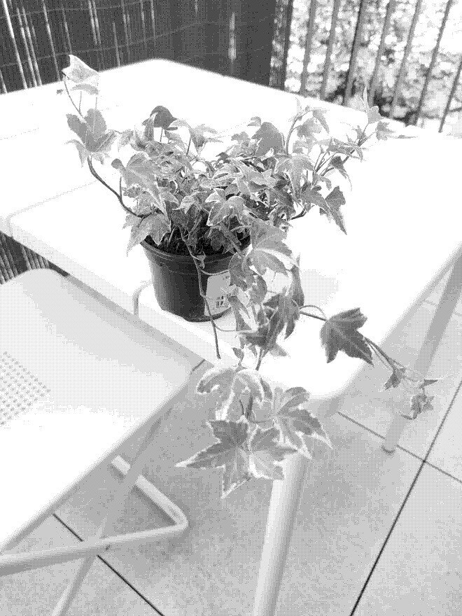

Goldchild ivy

Care
A determinate climber composed of three to five-lobed, gray-green leaves.
- Likes full sun to partial shade, not very picky about it
- Keep soil evenly moist, you can mist it daily too
- 40% relative humidity around the plant is ideal
- Grows best in temperatures between 10-24°C